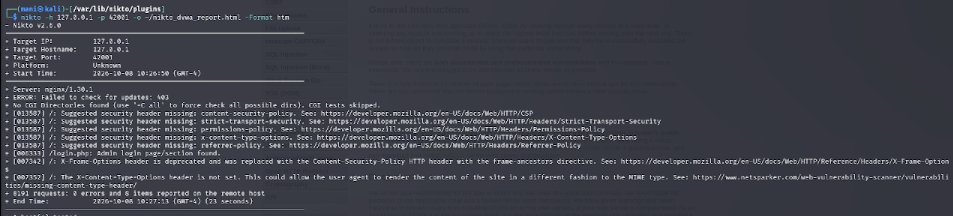
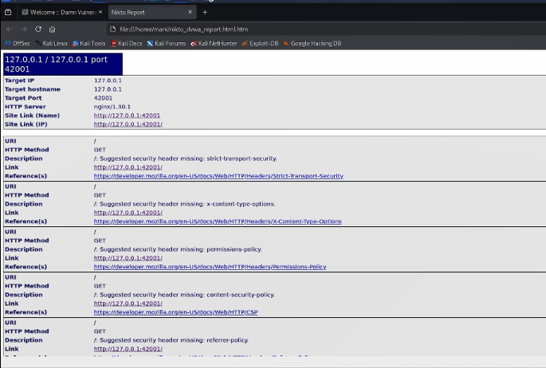
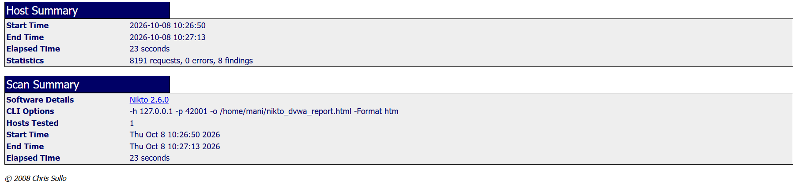

6.октябрь.2026
Изучить принцип работы сканера безопасности веб-серверов Nikto и применить его для сканирования уязвимого веб-приложения DVWA, развёрнутого в локальной среде Kali Linux, с целью выявления типовых проблем конфигурации веб-сервера.
Nikto — это базовый сканер безопасности веб-сервера с открытым исходным кодом. Он выполняет комплексное тестирование веб-сервера и обнаруживает потенциально опасные файлы и скрипты, устаревшие версии серверного ПО, а также проблемы конфигурации, которые могут быть использованы злоумышленником.
Nikto способен обнаруживать следующие категории проблем:
| Категория | Примеры |
|---|---|
| Опасные файлы | Резервные копии, тестовые страницы, файлы конфигурации, доступные извне |
| Устаревшее ПО | Старые версии Apache, nginx, PHP, CMS |
| Неправильная конфигурация | Отсутствующие заголовки безопасности, открытые листинги директорий |
| Раскрытие информации | Полные пути, баннеры сервера, сигнатуры технологий |
| Учётные данные | Страницы входа с возможностью подбора пароля |
| Параметр | Назначение |
|---|---|
-h <host> |
Целевой хост или IP-адрес |
-p <port> |
Порт веб-сервера (по умолчанию 80) |
-o <file> |
Файл для сохранения отчёта |
-Format <type> |
Формат отчёта (htm, csv, txt,
xml и др.) |
-ssl |
Использовать SSL/TLS |
-Tuning <n> |
Выбор типов проверок (например, -Tuning 123 — только
определённые категории) |
-Display <n> |
Управление выводом (например, -Display V — показывать
только найденное) |
Перед началом работы убеждаемся, что Nikto установлен в системе. Переходим в директорию плагинов и запускаем проверку версии командой:
cd /var/lib/nikto/plugins
nikto -VersionВ выводе отображается версия Nikto v2.6.0, что подтверждает корректную установку инструмента.
Рис. 1 — Проверка версии Nikto
Выполняем сканирование локального веб-сервера DVWA с указанием порта 42001, на котором работает приложение:
nikto -h 127.0.0.1 -p 42001Nikto выводит информацию о целевом хосте:
127.0.0.1127.0.0.142001Unknownnginx/1.30.1
Рис. 2 — Запуск сканирования Nikto
В процессе сканирования Nikto обнаружил 8 проблем на целевом сервере. Рассмотрим их подробнее — все они относятся к отсутствующим HTTP-заголовкам безопасности.
Strict-Transport-Security+ /: Suggested security header missing: strict-transport-security.Заголовок HSTS сообщает браузеру, что сайт должен использовать только HTTPS-соединения. Без него возможны атаки типа SSL-stripping, при которых злоумышленник понижает защищённое соединение до обычного HTTP.
X-Content-Type-Options+ /: Suggested security header missing: x-content-type-options.Заголовок X-Content-Type-Options: nosniff предотвращает
MIME-sniffing — попытку браузера угадать тип файла по его содержимому.
Без этого заголовка возможны атаки путём загрузки вредоносных файлов под
видом безопасных.
Permissions-Policy+ /: Suggested security header missing: permissions-policy.Заголовок Permissions-Policy управляет доступом к функциям браузера (камера, микрофон, геолокация). Его отсутствие не критично, но рекомендуется для минимизации поверхности атаки.
Content-Security-Policy+ /: Suggested security header missing: content-security-policy.CSP — один из ключевых заголовков защиты от XSS. Он ограничивает источники, из которых браузер может загружать скрипты, стили и другие ресурсы.
Referrer-Policy+ /: Suggested security header missing: referrer-policy.Заголовок Referrer-Policy контролирует, какая
информация о текущей странице передаётся в заголовке
Referer при переходе на другие сайты.
+ /login.php: Admin login page/section found.Nikto обнаружил страницу login.php — форму входа
администратора. Это ожидаемо для DVWA и показывает, что сканер корректно
распознаёт точки аутентификации.
X-Frame-Options+ /: X-Frame-Options header is deprecated and was replaced with the Content-Security-Policy
HTTP header with the frame-ancestors directive.Заголовок X-Frame-Options считался стандартом для защиты
от clickjacking, но сейчас он устарел в пользу
директивы frame-ancestors в CSP.
Content-Type+ /: The X-Content-Type-Options header is not set. This could allow the user agent to render
the content of the site in a different fashion to the MIME type.Отсутствие явного указания Content-Type позволяет
браузеру самостоятельно определять тип содержимого, что открывает путь к
атакам через MIME-confusion.

Рис. 3 — Список обнаруженных Nikto проблем
Для формирования итогового отчёта повторно запускаем сканирование с сохранением результатов в файл:
nikto -h 127.0.0.1 -p 42001 -o /home/mani/nikto_dvwa_report.html -Format htmПараметры команды:
-h 127.0.0.1 — целевой хост (локальный);-p 42001 — порт, на котором работает DVWA;-o /home/mani/nikto_dvwa_report.html — путь для
сохранения отчёта;-Format htm — формат отчёта HTML.После завершения сканирования в терминале отображается сообщение:
+ 8191 requests: 0 error(s) and 8 item(s) reported on remote host
+ End Time: 2026-10-08 10:27:13 (GMT-4) (23 seconds)Это означает, что Nikto выполнил 8191 запрос к серверу, не встретил ошибок и обнаружил 8 проблем.

Рис. 4 — Сохранение отчёта Nikto в HTML
Открываем созданный HTML-отчёт в браузере:
firefox /home/mani/nikto_dvwa_report.htmlВ отчёте отображается структурированная информация о сканировании. В верхней части — Host Summary и Scan Summary с ключевыми метриками:
2026-10-08 10:26:502026-10-08 10:27:1323 seconds8191 requests, 0 errors, 8 findingsNikto 2.6.01
Рис. 5 — Сводка Host Summary и Scan Summary
В нижней части отчёта приведены подробные описания каждой находки. Для каждой проблемы указываются:
/);GET);Например, для отсутствующего заголовка
Strict-Transport-Security в отчёте указана ссылка на
официальную документацию Mozilla:
https://developer.mozilla.org/en-US/docs/Web/HTTP/Headers/Strict-Transport-Security
Рис. 6 — Детализация находок в HTML-отчёте
| Метрика | Значение |
|---|---|
| Целевой хост | 127.0.0.1 |
| Порт | 42001 |
| Версия сервера | nginx/1.30.1 |
| Всего запросов | 8191 |
| Ошибок | 0 |
| Обнаружено проблем | 8 |
| Время сканирования | 23 секунды |
Все 8 обнаруженных проблем относятся к категории отсутствующих или устаревших HTTP-заголовков безопасности:
/login.php).frame-ancestors.Важно понимать, что отсутствие заголовков безопасности — это не уязвимость сама по себе, а ослабление защиты. DVWA — намеренно уязвимое приложение, поэтому ожидаемо, что его конфигурация не включает защитные механизмы.
Однако в реальной эксплуатации веб-приложения такие находки требуют внимания:
X-Content-Type-Options: nosniff позволяет
злоумышленнику загрузить файл, который браузер интерпретирует как
исполняемый код, даже если сервер отдаёт его как изображение.Referrer-Policy может
привести к утечке чувствительных данных (например, URL с токенами) на
сторонние ресурсы.Permissions-Policy даёт
возможность нежелательного доступа к функциям устройства
пользователя.Nikto продемонстрировал свою эффективность как инструмент быстрой оценки конфигурации веб-сервера. За 23 секунды сканирования он:
nginx/1.30.1);При этом Nikto не обнаружил уязвимостей приложения (SQL-инъекции, XSS, CSRF) — для этого требуются специализированные инструменты (Burp Suite, sqlmap, OWASP ZAP). Nikto дополняет их, обеспечивая проверку серверного окружения и конфигурации.
В ходе индивидуального проекта № 4 был изучен и практически применён
сканер безопасности веб-серверов Nikto. С его помощью
выполнено сканирование уязвимого приложения DVWA, развёрнутого на порту
42001 локального сервера. Nikto выполнил 8191
HTTP-запросов за 23 секунды, не встретив ошибок, и обнаружил
8 проблем, связанных с отсутствием или устареванием
HTTP-заголовков безопасности.
Освоены ключевые параметры команды Nikto:
-h — целевой хост;-p — порт;-o — файл отчёта;-Format htm — формат сохранения результатов.Полученный HTML-отчёт содержит структурированную информацию: сводку сканирования, статистику, детальное описание каждой находки со ссылками на документацию. Это делает Nikto удобным инструментом для быстрой первичной оценки защищённости веб-сервера и подготовки отчётов.
Основной вывод работы: Nikto — эффективный инструмент для выявления проблем конфигурации веб-сервера, однако он не заменяет специализированные сканеры уязвимостей приложений. Для комплексного аудита безопасности веб-приложения необходимо сочетать Nikto с инструментами динамического анализа (Burp Suite, OWASP ZAP) и ручным тестированием.